Reinforcement Learning · Lecture 6
Function Approximation
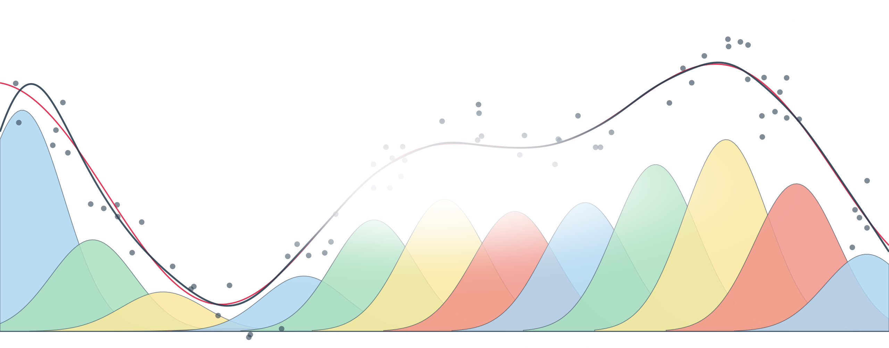
Rafael Fernandes Cunha

Q-learning overestimation and Double q-learning
Selecting the action
Evaluating the action
Q-learning overestimates because:
1) It uses the same action-value function to select and to evaluate the action!
2) It has the maximization term.
![\begin{align*}
\textcolor{blue}{q_2}(S_t, A_t) \leftarrow \textcolor{blue}{q_2}(S_t, A_t) + \alpha \big[R_{t+1} + \gamma \textcolor{red}{q_1}\Big(S_{t+1}, \argmax_a \textcolor{blue}{q_2}(S_{t+1}, a)\Big) - \textcolor{blue}{q_2}(S_t, A_t)\Big]
\end{align*}](media/a89a6088ec.png)
![\begin{align*}
\textcolor{red}{q_1}(S_t, A_t) \leftarrow \textcolor{red}{q_1}(S_t, A_t) + \alpha \big[R_{t+1} + \gamma \textcolor{blue}{q_2}\Big(S_{t+1}, \argmax_a \textcolor{red}{q_1}(S_{t+1}, a)\Big) - \textcolor{red}{q_1}(S_t, A_t)\Big]
\end{align*}](media/b1db6d6709.png)
Off-Policy Learning: Importance Sampling Corrections
Off-policy: Learn about target policy from experience sampled from behaviour policy
Evaluate target policy
to compute or
Use behaviour policy
to generate actions
➢Note that you are sampling from one probability distribution to learn about a different one.
![\begin{align*}
\mathbb{E}[R_{t+1}|S_t = s, A_t \sim \pi]
\end{align*}](media/c32a33fb6b.png)
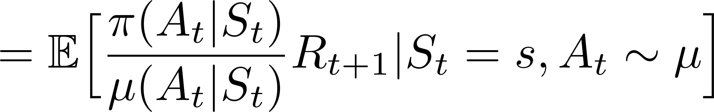
Approximate Values By Stochastic Gradient Descent
Goal: Learn the state-value function
![\begin{align*}
J(\mathbf{w}) = \mathbb{E}_{S \sim d}[(v_{\pi}(S) - v_{\mathbf{w}}(S))^2]
\end{align*}](media/a521b77bc8.png)
True value
Estimated value
parameterized by w
Approximate Values By Stochastic Gradient Descent
Goal: Learn the state-value function
True value
Estimated value
parameterized by w
Loss function
Approximate Values By Stochastic Gradient Descent
Goal: Learn the state-value function
Find w that minimize this difference!
Goal:
Approximate Values By Stochastic Gradient Descent
Goal: Learn the state-value function
Let it be a differentiable
function of parameter vector w
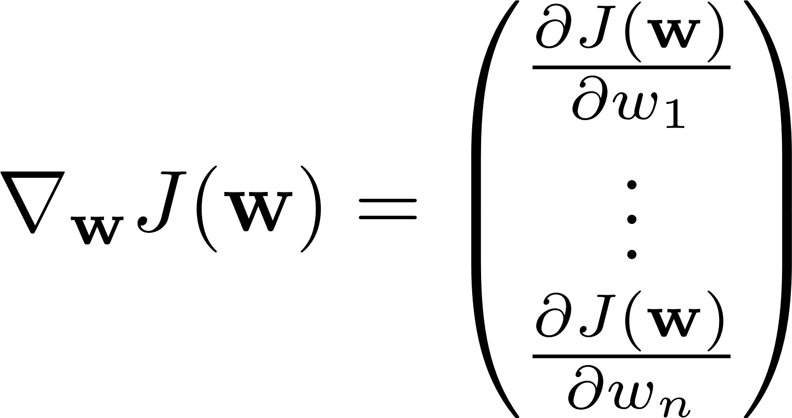
Gradient
Goal: to minimize
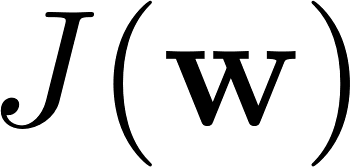

Method: move w in the direction of negative gradient
step-size parameter
Update rule:
Approximate Values By Stochastic Gradient Descent
Goal: Learn the state-value function
Approximate Values By Stochastic Gradient Descent
Goal: Learn the state-value function
How to solve it without a model?
This is an expectation equation.
We need to sample it!
Stochastic Gradient Descent

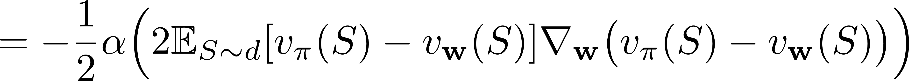
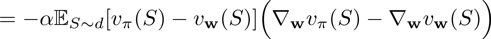
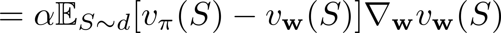
Monte Carlo:
TD(0):
TD():

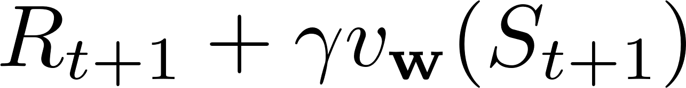

Approximate Values By Stochastic Gradient Descent
Goal: Learn the state-value function
Stochastic Gradient Descent
How do we approximate the true
(target) value when sampling?
Monte Carlo:
TD(0):
TD():
Approximate Values By Stochastic Gradient Descent
Goal: Learn the state-value function
Stochastic Gradient Descent
Do you see any problem here?
Monte Carlo:
TD(0):
TD():
Approximate Values By Stochastic Gradient Descent
Goal: Learn the state-value function
Stochastic Gradient Descent
Do you see any problem here?
We considered that did not depend
on w when taking the gradient!
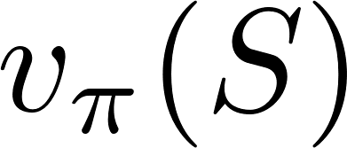
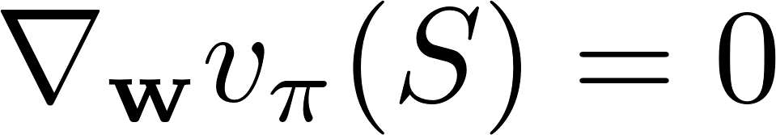
TD(0):
TD():
Approximate Values By Stochastic Gradient Descent
Goal: Learn the state-value function
Stochastic Gradient Descent
Do you see any problem here?
We considered that did not depend
on w when taking the gradient!
Bootstrapping methods are biased! They do not produce a true gradient-descent method!
They include only a part of the gradient. We call them semi-gradient methods.
Approximate Values By Stochastic Gradient Descent
Goal: Learn the state-value function
Stochastic Gradient Descent
How to compute this gradient?
Linear
Non-linear
We need to define how we are approximating our function!
(Deep) neural nets
Linear Function Approximation
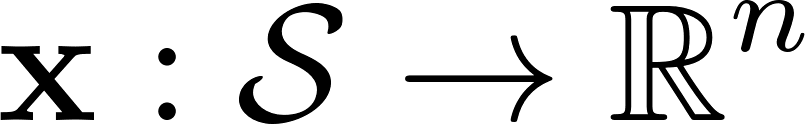
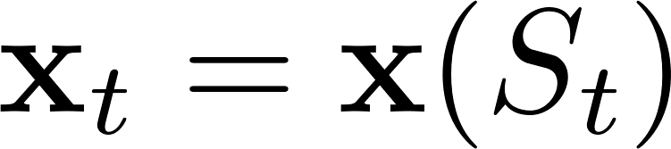

Represent state by a feature vector
is a fixed mapping from state to features
Short-hand:
Examples:
➢Distance of robot from landmarks
➢Trends in the stock market
➢Piece and pawn configuration in chess
Linear Function Approximation
Represent state by a feature vector
Feature construction for Linear Methods
➢Polynomials
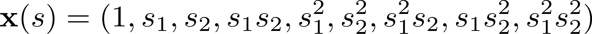
Linear Function Approximation
Represent state by a feature vector
Feature construction for Linear Methods
➢Polynomials
➢Fourier Basis
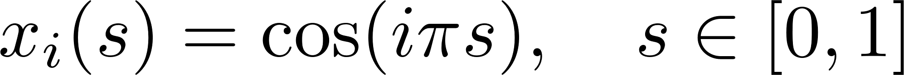
One-dimensional Fourier cosine-basis features for approximating functions over the interval [0, 1].
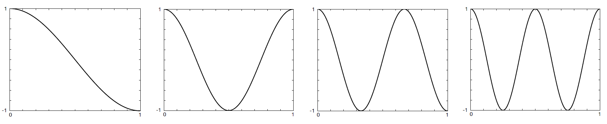
Linear Function Approximation
Represent state by a feature vector
Feature construction for Linear Methods
➢Polynomials
➢Fourier Basis
➢Coarse Coding
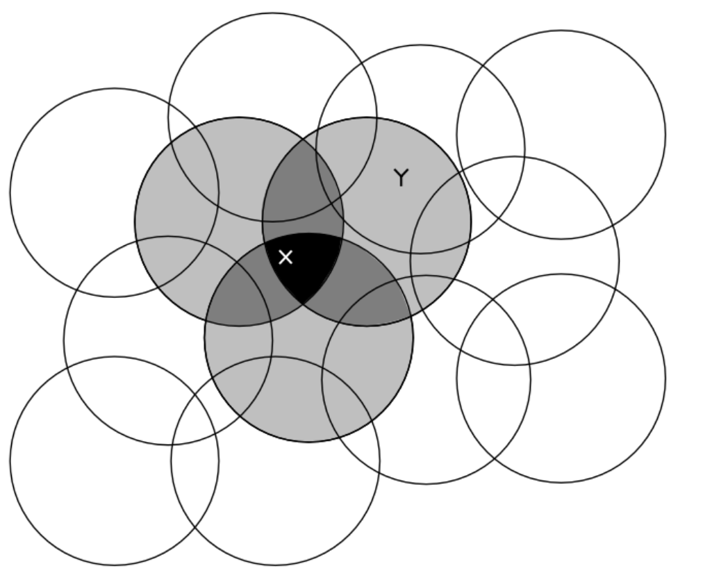
Coarse coding provides large features vector x(s)
Parameter vector w gives a value to each feature.
➢We aggregate multiple states
➢This means the resulting feature vector/agent state is non-Markovian
➢This is the common case when using function approximation
➢Consider whether good solutions exist for given features + function approximation
➢Neural networks tend to be more flexible
Linear Function Approximation
Represent state by a feature vector
Feature construction for Linear Methods
➢Polynomials
➢Fourier Basis
➢Coarse Coding
➢Tile Coding
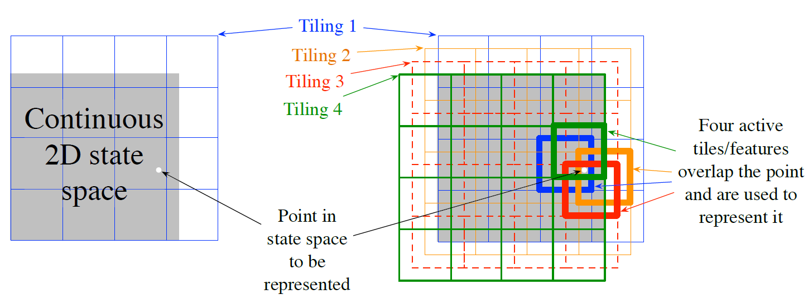
Linear Function Approximation
Represent state by a feature vector
Feature construction for Linear Methods
➢Polynomials
➢Fourier Basis
➢Coarse Coding
➢Tile Coding
➢Radial Basis Function
(Generalization of coarse coding to continuous-valued features)
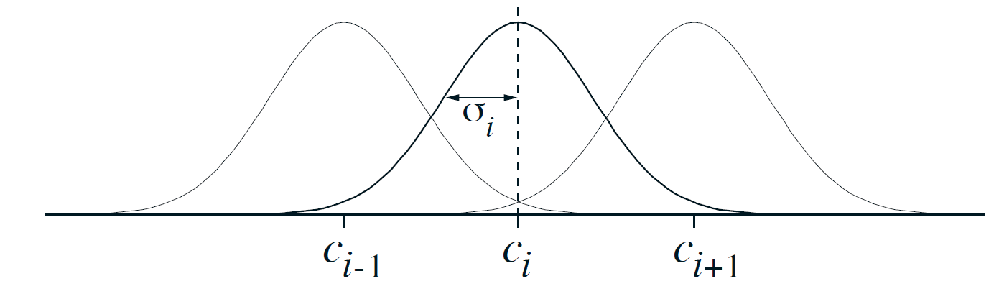
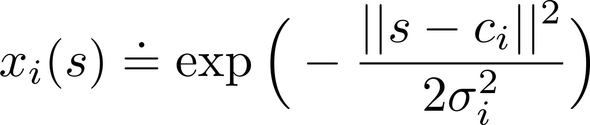
Linear Value Function Approximation
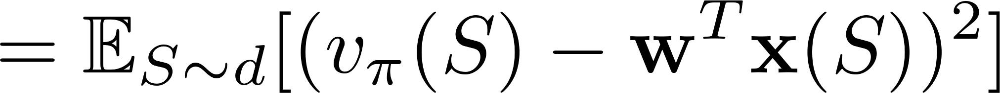
Objective function:
Approximate value function by a
linear combination of features
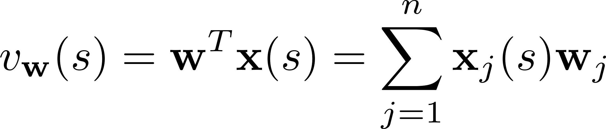
quadratic in w
Stochastic gradient descent
converges on global optimum!
Linear Value Function Approximation
Approximate value function by a
linear combination of features
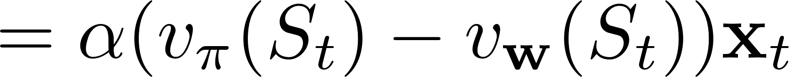
Objective function:
Stochastic gradient descent:
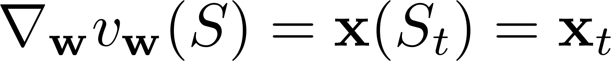
Update = step-size x prediction error x feature vector
Linear Value Function Approximation
Approximate value function by a
linear combination of features
Objective function:
Stochastic gradient descent:
Update = step-size x prediction error x feature vector
Linear Value Function Approximation
Approximate value function by a
linear combination of features
Objective function:
Stochastic gradient descent:
Update = step-size x prediction error x feature vector
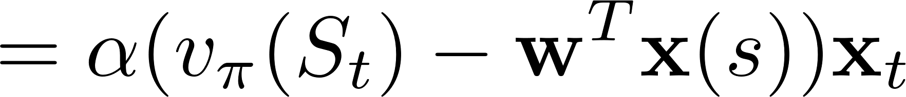
Linear Value Function Approximation for Prediction: MC
Monte-Carlo: is an unbiased sample of true value
Apply “supervised learning” to (online) “training data”:

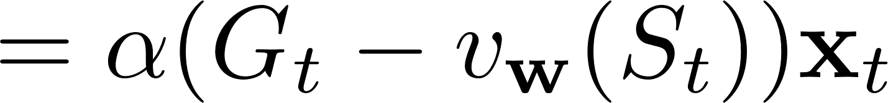
Linear Monte-Carlo evaluation converges to the global optimum
Even when using non-linear value function approximation it converges
(but perhaps to a local optimum)
Linear Value Function Approximation for Prediction: TD(0)
TD(0): is a biased sample of true value
Apply “supervised learning” to (online) “training data”:
This is akin to a non-stationary regression problem
But it’s a bit different: the target depends on our parameters!

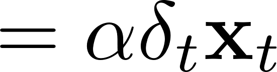
TD-error
Action-Value Function Approximation
Approximate the action-value function
For instance, with linear function approximation with state-action features
Stochastic gradient descent update

state
Action-Value Function Approximation
Approximate the action-value function
For instance, with linear function approximation with state-action features
Stochastic gradient descent update
state
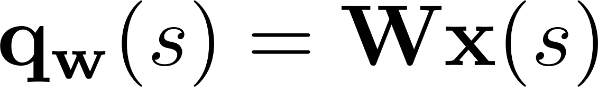
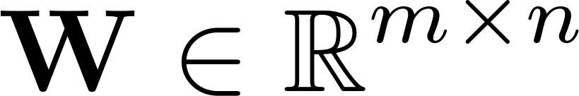
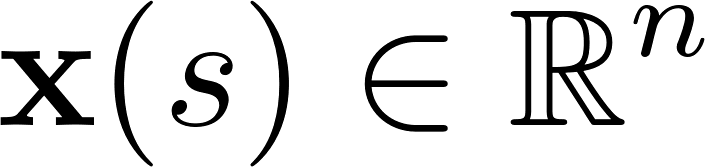
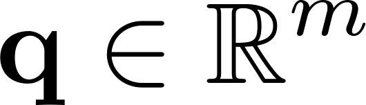
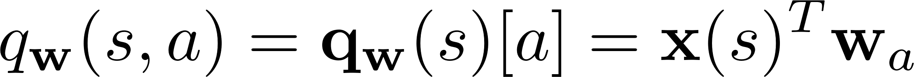
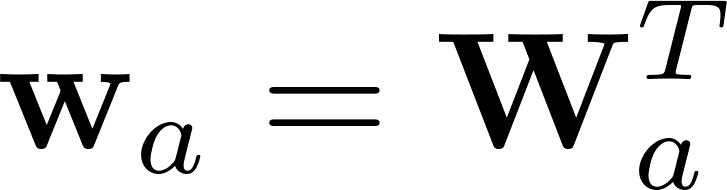
Action-Value Function Approximation
Should we use action-in, or action-out?
Action in:
Action out:
One reuses the same weights, the other the same features
Unclear which is better in general
If we want to use continuous actions, action-in is easier (later lecture on actor-critic)
For (small) discrete action spaces, action-out is common (e.g., DQN)